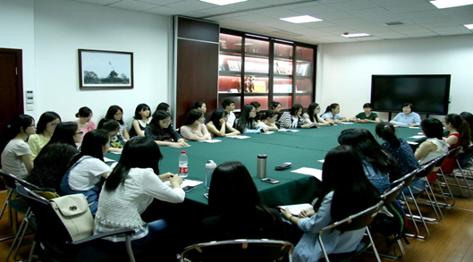

新闻传播学院第五十三期入党积极分子培训班讨论课顺利举行 |
华新在线讯（通讯员 田师尧）5月9日晚，新闻传播学院第五十三期入党积极分子培训班讨论课在我院会议室召开。我院34名积入党极分子围绕“如何树立正确的入党动机、为何要学习党的光辉历史”、“怎么样带头践行社会主义核心价值观”、“共产党员的先进事迹”和“入党程序有哪些”等几个方面，结合自身实际进行了集中讨论学习，分享了彼此的党课学习心得和对党的认识。带队老师刘敏华参加并主持了此次讨论，认真听取了各个入党积极分子的发言并进行指导。 |
讨论伊始，刘敏华就本期培训班的后期工作做了安排，并强调了本次讨论课的要求，她强调：“讨论内容忌假大空，对党的理解和认识不能只停留在理论或者书本的层面，要从自身实际出发，多谈自己的心得体会。”随后我院每位入党积极分子根据自己的讨论提纲进行了发言，同学们积极地发表自己的观点，紧扣主题，条理清晰。 |
 |
讨论过程中，如何带头践行社会主义核心价值观是一个热点话题。2014级研究生张博从考试、就业等角度进行了阐述，他认为，我们一定要谨记“不以恶小而为之”，比如考试中我们认为夹带小纸条是作弊，却认为在桌子上写下几个关键词提醒思路够不上作弊，从而减轻了对自身的道德审判，这就违背了原则。他结合我院党委书记韩君华在党课上送给学员们“慎独”两字箴言号召大家在今后的学习工作中慎独谨言，从细节出发，点滴做起，以实际行动践行社会主义核心价值观。 |
在谈及优秀共产党员的先进事迹的时候，许多学员都谈了自己的榜样。从周恩来到钱学森，从杨善洲到郭明义，不胜枚举。其中，2012级本科生陈丹丹提及老乡毛岸英，她认为，毛岸英虽为毛泽东同志的长子，却坚决不受父辈恩荫，深入基层锻炼自己，主动请缨身进朝鲜，最后在朝鲜壮烈牺牲。这种踏实肯干、不惧危难、舍小家为大家的精神值得我们每个人学习。 |
讨论持续了三个多小时，学员们畅所欲言自述党课感想。本期入党积极分子也对此次讨论表现出了一致认同，“我们讨论的过程中，加深了自己的对党的理解，发言的过程其实就是一个深化梳理的过程。同时通过听取其他同学的发言，可以清楚的看到自己的不足。”2013级本科生杜苗这样说道。刘敏华最后对各个学员的讨论发言做出了指导，并肯定了同学们的认真准备，她希望同学们更加认真准备6月13日晚的结业考试，在今后的学习生活中以一名共产党员的标准严格要求自己，争取早日入党！ |